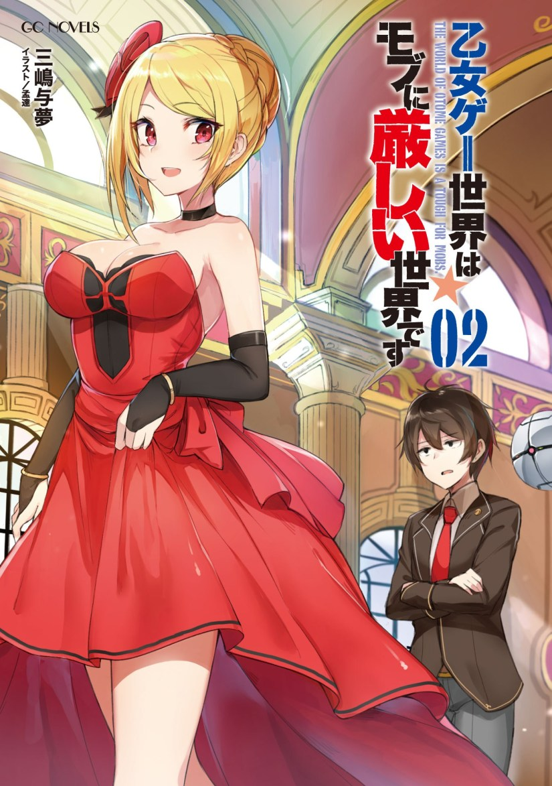
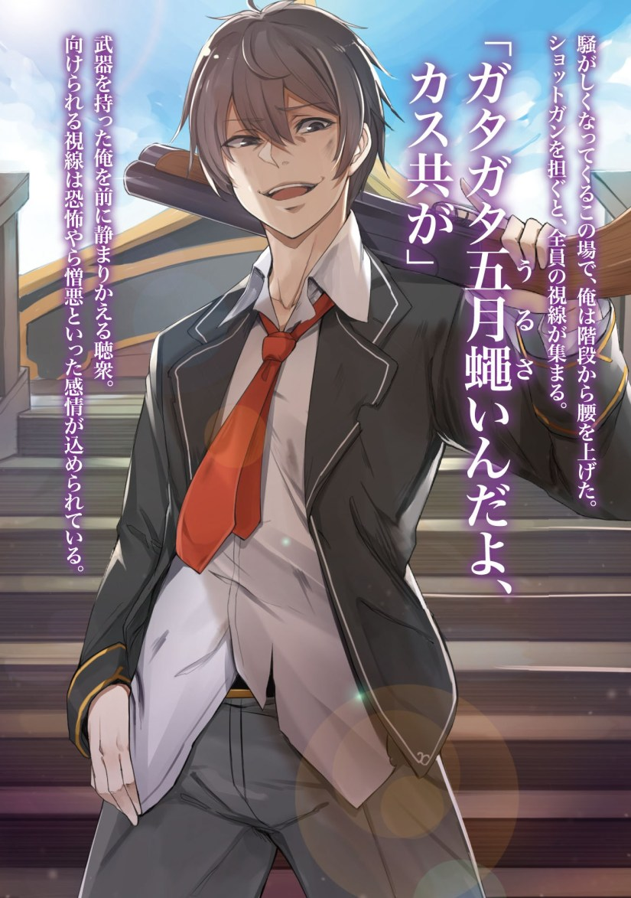
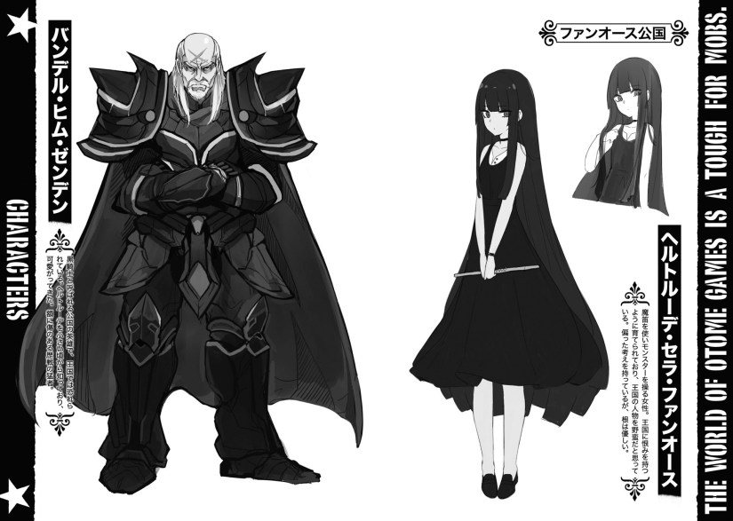
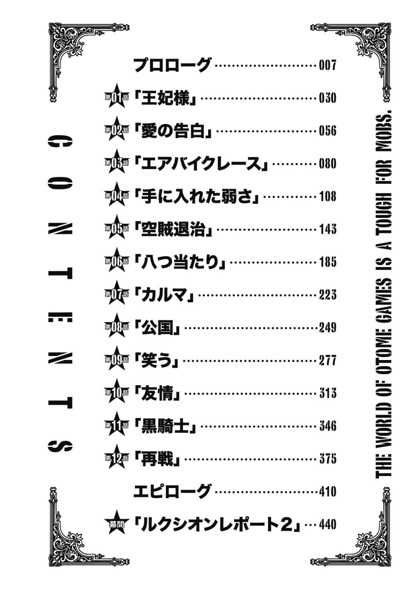
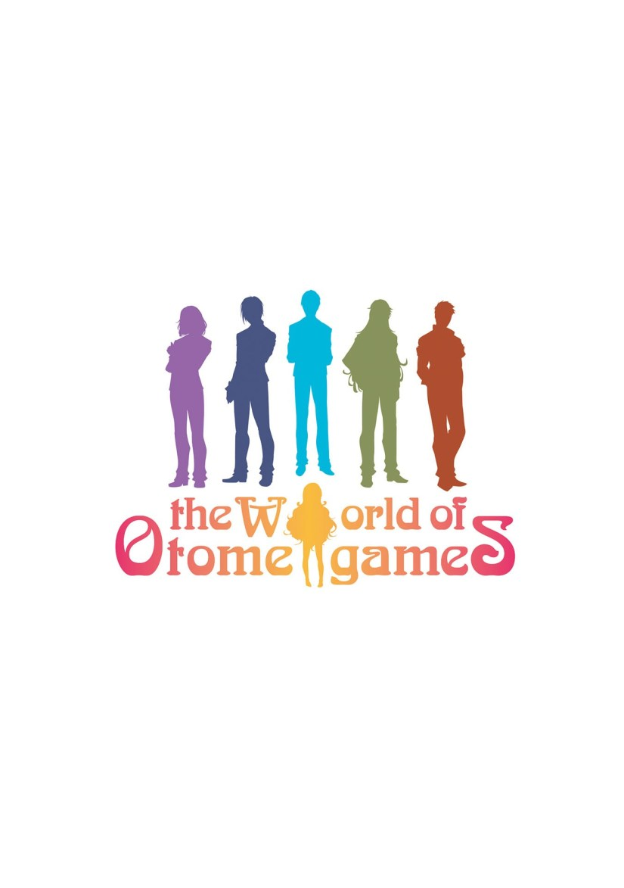

TLN: Okay, so I talked with bakapervert (the aforementioned translator from previous announcements), and he suggested that I continue translating while he offers me help on phrases/sentences I’m stuck on. I figured that was a good enough compromise (I continue translating while feeling more confident about the accuracy), so we’re back in business now. Yeah I know, that was quick.

Click the arrows to see the illustrations
These illustrations are from the inside covers


Thank Christ you’re continuing. You don’t know how much hair I’d lose if this went over to some rather unscrupulous individuals.
Seconded
bakapervert is unscrupulous?
Apologies, I did not read the notification in the top
Err @2slow2late do you have a Patreon? Not talking about for extra chaps, but if we wanna show some support cause we like your work?
Hahaha! The best news I’ve heard today!
Thanks for your hard work!
thanks for the illustrations and is good to hear that you will continue with the novel
Happy to hear you’ll be staying with us. Thank you for your work and feeding our addiction for new chapters!
thank you <3 I lots of my favorite novels are dropped thank goodness this one wont
Nobu-san was dropped, Power in the Shadows enters a coma every few months, and Death Mage has slowed to a crawl. I’m in the same boat and THIS is the novel I feel like I can look forward to most days.
Death Mage take’s forever now, I remember when chapters would get pumped out like clock-work, Plus the person translating it makes quite a bit of cash from it too
We read alot of the same stuff though i dropped power in tge shadows
I hope we have anice future ahead…(flag raiser)
thank you!
Welcome back
I just woke up
And this announcement just made my day!
Thank you very much TL!
* May RNGesus bless you TL Bakapervert! *
Upon seeing this…….
YESSSSSS!!!!
Oh yeah, ty for the announcement 🙂
i just read your conversation in his site when i was done reading with the his latest translation release. he really is a cool and nice guy
Welcome back though that was so quick.
Thanks for continuing this series man
And holy god that livia thick thigh!!
There’s a milf too!!! Don’t forget the milf that will seduce the MC!!!
The queen(??)? Dunno I am suppresed by my RL troubles so Idk.
So, no one else will comment on those nice sets of oppai on both Livia and Anjie? My god, they were great, and their undergarments only managed to accentuate their nice figures. Now, I can see why Livia was able to compete with Anjie in the original story, but my god, I am hoping for Leon to realize that he can always chose polygamy as a marriage option.
Oh My Gawd… you went to BakaPervert!? That guy’s like one of the best TL’s I know! Oh, I approve of what you two talked about. Trust me, you may learn a lot from that guy. Oh wait, I’m supposed to be happy that you’re continuing instead of surprised about that baka. THANKS FOR CONTINUING ON!!!
Moreover he is translating sevens, a novel from the same author lol.
Didn’t yoraikun already translate sevens tho?
Bakapervert is translating th light novel version
YASS
Thx for the Chapter~!!
(´｡• ω •｡`)
YAAAAASSSSSS !!! IT’S NOT DROPPED !!!
That face tho..
Yay!! this is one of the few remaining Jp novels that i read
glad to see that it ain’t going to be stuck in pick up hell
I was actually happy when i heard that bakapervert might take over the translation because i also like your other project “Is it tough being a friend”
i guess that’fine to, thanks for the translation.
alhamduliilah
glad u still working it, also thx for bakaperv for supporting the translator of tis site
Alhamdulillah.
Tis a blessing.
Alhamdulillah brother
Thank you for continuing this. We appreciate your efforts thus far!
Thanks for continuing to translate this!
And Shotgun Leon canon confirmed!
I think that bakapervert has a lot on his plate already, although I’m impressed to see that he was willing to take on yet another project. Thank you for trying your best to keep him from being buried.
Thank youu veryy much
Thanks for the illustrations! 🙂
& glad to hear you’ll keep translating this novel 😀
I know we all said we would support you no matter what but to be honest we really hoped you would stay translating so thank you very much and I hope you’ll be with us for a long time
That last pic of marie😨, those jewellery😱.
Thank you so much for picking it again. this is the best thing I heard within 5 months ( trully, no exaggeration ).
Will lady Marie ascend?
Huzzah! We’re back in business!
Still, when is Ichirou coming back, we got cliffhangered bad.
Love you as always,
FelixisSparky
Thanks for picking this again.
Look at that illustrations, I don’t know why livia and angelica sleep together in underwear but i believe Luxon has a data for that. And look at Leon face with money he’s really enjoying being a villain
I absolutely agree.
Good thing that you’ll still continuing the translation
Thanks for continuing this novel~~
Thank you
Thank you for continuing this.
LOL Leon looked really enjoying count his money.
He said that he regret taking the student’s money when he won the bet….
… but that’s not the face of regret.
I like this m.c. I mean, he’s not the protagonist so he can act like this. Right?
*looks at Leon’s face in the illustrations*……….Soooooooo, we all agree that Leon seems like a complete protagonist, right? I can only imagine how scummy his face looked during the duel against those otome game capture targets…..Hahahhahaha *eyebrow twitches with cold sweat*
yeaaaaaaaaah!!!! love ya!!! thanks for continuing
Yay~
Yay !
Oh, illustrations for the next volume.
Eh, what’s this ? You’re continuing the translation !? Wow !
2slow2late, Aniki !!
I want to call you my aniki !!
Bakapervert is one of the fastest translator. Long ass chapter in a day every day
Hai, thank you for keeping on keeping, may fortune be with your translations and glad to be on board with you through this story.
*formal dogeza
Thank you very much for the translation. The story is great, I love it.
Thanks for the illustrations~
Also, I’m glad you’re continuing this. Getting help from Bakaperv is a good move.
今後ともよろしくお願いします、TLさん。
I am glad that u are continuing this novel.Allowing us continue this journey with you.
Welcome back BRURTHER!!
:3
Padoru, padoru..
:v
Thank you for willing to continue this project!
…
yes.
Yes!
YEEEEESSSSS!!
*cue headbanging of happiness in the office*
Best news I’ve all week.
I believe the correct phrase is: a-booyah.
Look at that Leon counting money 💴
It looks like he enjoyed being a villain thou it seems like new enemies has emerged.
I’m so happy that I just want to leave a comment again to thank you for continuing it.
Much, love
MANTAP DJIWA!!
Wait what? Wasn’t the currency gold or white gold? Why is it bills now?
do not worry now we just have to wait to for chapter to appear because this will be continued so the real question is who is this new girl and if she gone join harem of “friends”
There was a chapter saying they also use bills, iirc.
Thanks 4 continuing the series
Wuooo, is the best news i heard today. Pokoke MUANTAP DJIWA. JOSSS~~
It’s always nice to know that our LN community is noce enough to help each other out
im hapy for this news thank u for all have u done and thx for u continuing this series
I just have a feeling that if you really put your mind into it you could make a novel that makes the reader go through some pretty quick roller coaster of emotions XD
Also I’m thankful as the other readers for continuing because I actually enjoy the novel and your work~
Glad to see you back
Glad to have you back dear friend
this is slightly early but. Thank you for the Christmas present 🙂
Heck yeah baby, we are back on business~~
Decided to post for the first time, Glad to see that you are sticking to the series mate. I appreciate all the time you spend on translating this series and you have a beloved community who fully support you doing this wonderful work. Keep at it and best of luck!
Mr. Bear
Sigh.. you’ve just shaved my 15 years life spans cuz of worrying… well, since you will continue this novel, guess it’s worth those life spans
Anyway, thanks for the illustration ya~
Oh and those picture are the facts that this story will ended up as harem right? Maybe one my previous question already got answer today…
Thanks for this pic,..
I love u and bakaperv. thank,,
This is the best news I heard today, god bless you guys. This series is liquid gold and it would be a shame if it got dropped like other great isekai mangas. I bet most people know which series I am talking about.
Good to see that you Will keep this work.
You are already doing a pretty damn good work. Just keep going and be more confident in yourself.
thank for the back, although i already read your writing about the reason you want to quit but if you not sure about your translate speed is slow or not check the JNovel website and check they release you will see compare to you they still already slow than you in a single book some book i read from them have to wait for 4 month for 1 vol and the fastest book took nearly 2 month the speed you do actually fast or i say too fast (1 part for day lol )
Thank you for continuing it….!!! *cries tears of joy
Honestly man, I don’t really comment but good for you, This is a really good series.
Glad too see you back, you’re clearly one of the most dedicated TL I’ve ever seen. Bakapervert is an excellent TL, it’s good to see him participating in this project.
Btw, on the cover I thought Leon was gonne get hit by a ball, until I realized it was Luxon LMAO
Great to have you back 😉
Thanks for sticking with this! Also your speed is pretty good compared to others. Some take a whole month between chapters due to too many projects at the same time. Agonizing as it is to say keep your physical and mental health as first priority even if it takes longer to get a translation out. If need more time just say so.
Ah thank you for continuing. Love ya~
My first thought when I saw Livia and Anjie in bed together holding hands: It was Yuri?!
My second thought: and their holding hands?! How scandalous!
Thank you!!! (*˘︶˘*).｡.:*♡
just want to xpress gratefulness as one of many others who read this.
MC looks like an evildoer without Livia or Anjie.
What’d with the kimonos? And they go to a shrine? Oh wait, this is the world of an otome game. Of course they exist(even though it doesn’t make sense, which makes it more hilarious).
This is amazing news! Thank you so much for continuing this. This series brings me joy every time you release a new chapter. And with your collaboration, I expect I’ll be even happier hahaha.
Yup this is definitely NG+
YOU ARE BACK! Love bakapervert’s job and yours! You guys are doing a terrific job!
Man, Anjelica sure is a beauty. I’ve always loved the Blonde hair and Red eye combo.
I’ve never commented before but Im glad you’re continuing with the TL. You are one best WN/LN translator I’ve seen and even with mtl it is still good. So dont be hard on yourself and the others reader and I will give your our full support.
I’m glad that it wasn’t dropped cuz its one of my favorite on series.. 🙂
Thanks for your continuing, never imagined i’d get addicted to this series and your translation sure is one of the best.😁
Thank you sir,
I’d succ Bakapervert’s deek for that. Of course, no homo. jk thanks for continuing 🙂
Can anyone translate the character names and text by their pics from the character illustration page? That way will know what they look like when introduced. Thought Jilk was Chris pic at first until finally mentioned Jilk has long green hair. Wonder who slovenly Leon lookalike is. Thought might be Leon at first but Leon always looked neat with jacket closed and wouldn’t look greedy at a pile of bills. Guess will find out along with braided girl who thinks can get away with sneering at Angie.
Thanks for continuing. You can even consider this an opportunity to learn japanese. Reading alongside a translation is one of the best ways to learn a language as long as you can keep yourself excited. (learning the words just in romaji will probably be much easier than learning thousands of kanji though)
Yey
Thanks for all the work you have put translating this series and infinite thanks for continuing.
I have been checking back everyday, when is the new update going to come? I thought you were going to work on update speed?
Same.. been waiting for update… but no luck
Thank you,glad you continoue this novel.
Thanks for continuing the translators!!!
And it seems he goes to the dark side in this one…
ooo god , she has the 3 items !
Ikr.
I hope it’s not going to what i expected